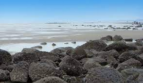

This article is about the city. For the district, see Cox's Bazar District.This article is about the city. For the district, see Cox's Bazar District. For the upazila, see Cox's Bazar Sadar Upazila. For the beach, see Cox's Bazar Beach. Cox's Bazar কক্সবাজার City Cox's Bazar beach 15.jpg Cox's Bazar Sunset.JPG Cox's Bazar Sea Beach in November 2017 17.jpg Cox's Bazar Airport Shevelev-1.jpg Marine drive, Cox's Bazar 02.jpg Cox's bazar town view at sugondha point.jpg From top: Cox's Bazar beach from mountain top, Sunset in beach, Beach area, Cox's Bazar airport, Marine drive road, Sugondha point Nickname(s): City of Tourism Cox's Bazar is located in Chittagong division Cox's Bazar Cox's Bazar Location of Cox's Bazar in Bangladesh Show map of Chittagong division Show map of Bangladesh Show all Coordinates: 21°25′38″N 92°00′18″ECoordinates: 21°25′38″N 92°00′18″E Country Bangladesh Division Chittagong Division District Cox's Bazar District Named for Hiram Cox Government • Type Mayor–Council • Body Cox's Bazar Municipality • Mayor Mujibur Rahman Area • City 23.4 km2 (9.0 sq mi) Population (2011 Total population represents population in city and metro represents entire district.[1]) • City 223,522 • Density 9,600/km2 (25,000/sq mi) • Metro 265,500 Time zone UTC+6 (BST) Postal code 4700 Airport Cox's Bazar Airport Website www.coxsbazar.gov.bd Bengali This article contains Bengali text. Without proper rendering support, you may see question marks, boxes, or other symbols. Cox's Bazar (/ˌkɒksɪz bəˈzɑː/; Bengali: কক্সবাজার, romanized: Kaksabājāra; pronounced [kɔksbadʒaɾ]) is a city, fishing port, tourism centre, and district headquarters in southeastern Bangladesh. It is located 150 km (93 mi) south of the city of Chittagong. Cox's Bazar is also known by the name Panowa, which translates literally as "yellow flower". Another old name was "Palongkee". The city has the longest uninterrupted natural beach in the world.[2]

Inani Beach (also Enani Beach) is a sea beach in Ukhia Upazila of Cox’s Bazar District, about 18 kilometers long. It has a nice view and has lots of coral stones. These coral stones take on a green shade during the summer & in the rainy season. It is a very beautiful beach known for its rock and coral boulders. The Hills can be seen from one side and sea on the other which makes it really impressive. The view of sunrise and sunset of this beach are very memorable. The blue water and the lines of stones is the main source of attraction for the tourists. The clean blue & shark free water is ideal for bathing and swimming without any fear.
The Himchari beach is relatively secluded and cleaner than Cox's Bazar. This cleanliness promotes the beauty of Himchari beach. Small fountains of mountains, mountains, and beaches captivate tourists. The natural beauty of the seas, mountains and cox's bazar can be enjoyed very easily by climbing the stairs hills